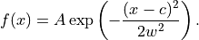
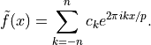
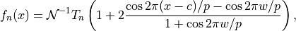
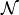
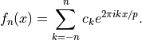
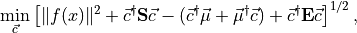
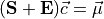

ofex.classical_algorithms¶
ofex.classical_algorithms.clique¶
ofex.classical_algorithms.funcapprox¶
- ofex.classical_algorithms.funcapprox.gaussian_function_fourier(n_fourier: int, width: float, center: float = 0.0, period: float = 2.0, peak_height: float = 1.0, sym_x: Symbol | None = None) Tuple[Expr, ndarray, ndarray][source]¶
Computes the Fourier series representation of a Gaussian function. It returns the Fourier approximation of:

The resulting Fourier series is represented as:

- Parameters:
n_fourier (int) – The number of Fourier coefficients on each side of the frequency spectrum (total coefficients = 2 * n_fourier + 1).
width (float) – The width parameter for the Gaussian function.
center (float, optional) – The center position of the Gaussian. Defaults to 0.0.
period (float, optional) – The period of the Fourier series (affects the frequency spacing). Defaults to 2.0.
peak_height (float, optional) – The peak height (amplitude) of the Gaussian function. Defaults to 1.0.
sym_x (Optional[sp.Symbol], optional) – A symbolic variable for constructing the symbolic series representation using sympy. Defaults to None.
- Returns:
- A tuple containing:
sp_series (sp.Expr): The symbolic representation of the Fourier series.
coeff (np.ndarray): The Fourier series coefficients as a complex-valued numpy array.
freqs (np.ndarray): The corresponding frequencies for the Fourier series coefficients.
- Return type:
Tuple[sp.Expr, np.ndarray, np.ndarray]
- ofex.classical_algorithms.funcapprox.chebyshev_filter_fourier(n_fourier: int, width: float, center: float = 0.0, period: float = 2.0, peak_height: float = 1.0, sym_x: Symbol | None = None) Tuple[Expr, ndarray, ndarray][source]¶
Constructs a Chebyshev bandpass filter using its Fourier series representation. It returns the Fourier expansion of:

where

is the normalizer that ensures the peak value of the filter is equal to peak_height. The resulting Fourier series is represented as:
- Parameters:
n_fourier (int) – Number of Fourier coefficients on each side of the frequency spectrum (total coefficients = 2 * n_fourier + 1).
width (float) – Width parameter, defining the filter’s sharpness.
center (float, optional) – Center position of the filter. Defaults to 0.0.
period (float, optional) – Period of the Fourier series (affects the frequency spacing). Defaults to 2.0.
peak_height (float, optional) – The peak height (gain) of the filter. Defaults to 1.0.
sym_x (Optional[sp.Symbol], optional) – A symbolic variable for constructing the symbolic series representation using sympy. Defaults to None.
- Returns:
- A tuple containing:
sp_series (sp.Expr): The symbolic representation of the Fourier series.
coeff (np.ndarray): The Fourier series coefficients as a complex-valued numpy array.
freqs (np.ndarray): The corresponding frequencies for the Fourier series coefficients.
- Return type:
Tuple[sp.Expr, np.ndarray, np.ndarray]
- ofex.classical_algorithms.funcapprox.plot_functions(func_list: Dict[str, Expr], x: Symbol, plot_options: Dict[str, Dict[str, Any]] | None = None, range_plot: Dict[str, Tuple[float, float]] | None = None, range_plot_options: Dict[str, Dict[str, Any]] | None = None, x_points: Sequence[float] | None = None, title: str | None = None, plot: bool = True)[source]¶
Plots one or more mathematical functions defined as SymPy expressions.
- Parameters:
func_list (Dict[str, sp.Expr]) – A dictionary where keys are function names (str) and values are SymPy expressions representing the functions to be plotted.
x (sp.Symbol) – The variable (symbol) used in the expressions within func_list.
plot_options (Optional[Dict[str, Dict[str, Any]]]) – A nested dictionary where the outer keys correspond to the function names in func_list and the inner keys specify matplotlib keyword arguments controlling the appearance of the individual plots (e.g., color, linestyle).
range_plot (Optional[Dict[str, Tuple[float, float]]]) – A dictionary where the keys are function names and the values are tuples specifying the minimum and maximum vertical distances to highlight as a range for a function.
range_plot_options (Optional[Dict[str, Dict[str, Any]]]) – A nested dictionary where outer keys correspond to the function names in range_plot, and values are matplotlib keyword arguments controlling the appearance of the highlighting range.
x_points (Optional[Sequence[float]]) – A sequence of x-values where the function(s) will be evaluated. If None, it defaults to 100 evenly spaced points between -1 and 1.
title (Optional[str]) – A title for the plot. If None, no title is added.
plot (bool) – Whether to display the plot. If False, the plot will not be shown but the axes will be returned.
- Returns:
Displays the plot(s) using matplotlib.
- Return type:
None
- class ofex.classical_algorithms.funcapprox.FunctionBasis(input_basis: List[Expr], inner_product: Callable[[Expr, Expr], complex] | None = None)[source]¶
Bases:
objectRepresents a basis of functions for projection and fitting in function space.
This class facilitates calculations such as the overlap matrix, projection of functions, and function fitting based on L2-norm minimization with or without regularization using a custom inner product.
- property n_basis: int¶
Returns the total number of basis functions.
- Returns:
The number of basis functions.
- Return type:
int
- property overlap_matrix: ndarray¶
Computes and caches the overlap matrix for the basis functions.
- Returns:
- A matrix where each element represents the inner product
of two basis functions.
- Return type:
np.ndarray
- iterate_basis_with_index(*args, **kwargs)[source]¶
Iterates over group of functions in the basis along with its index. By defaults, it yields a basis with one function at a time.
- Yields:
List[int] – Indices of basis function.
- projection(func: Expr) ndarray[source]¶
Projects a function onto the basis.
- Parameters:
func (sp.Expr) – The function to be projected.
- Returns:
The projection coefficients as a complex array.
- Return type:
np.ndarray
- l2_minimization(func: Expr) Tuple[Expr, ndarray, float][source]¶
Performs L2-minimization to find an optimal linear combination of basis functions.
- Parameters:
func (sp.Expr) – The target function for minimization.
- Returns:
The optimal function approximation.
Coefficients for the linear combination of basis functions.
Residual error norm of the approximation.
- Return type:
Tuple[sp.Expr, np.ndarray, float]
- gradual_l2_minimization(func: Expr, n_min=1, n_max=None, **kwargs) Dict[int, Tuple[Expr, ndarray, float]][source]¶
Performs L2-minimization by gradually increasing the basis size.
- Parameters:
func (sp.Expr) – The target function for minimization.
n_min (int) – The minimum number of basis functions to start with.
n_max (Optional[int]) – The maximum number of basis functions to consider. If not specified, defaults to the total number of iterations over basis groups.
**kwargs – Additional parameters passed to iterate_basis_with_index.
- Returns:
A dictionary where keys are the number of basis functions used, and values are tuples containing: - The approximate function. - Coefficients for the basis functions. - Residual error norm of the approximation.
- Return type:
Dict[int, Tuple[sp.Expr, np.ndarray, float]]
- Raises:
ValueError – If n_min is less than 1 or n_max is less than n_min.
- l2_minimization_regularized(func: Expr, reg_coeff: Sequence[float] | float, max_iter: int = 1000, conv_atol: float = 1e-06) Tuple[Expr, ndarray, float][source]¶
Performs L2-minimization with a regularization term.
This method finds an optimal linear combination of basis functions with regularization. Different methods are utilized for first and second-order minimization.

which leads to the linear equation:

where
 is a diagonal matrix with regularization coefficients.
is a diagonal matrix with regularization coefficients.- Parameters:
func (sp.Expr) – The target function for minimization.
reg_coeff (Union[Sequence[float], float]) – Regularization coefficients. Positive values only (either a single value or a sequence matching the basis size).
max_iter (int, optional) – Maximum number of iterations for the 1st order optimization (default is 1000).
conv_atol (float, optional) – Convergence absolute tolerance for the iterative method (default is 1e-6).
- Returns:
- A tuple containing:
The optimal function approximation as a symbolic expression.
Coefficients for the linear combination of basis functions.
The residual error norm of the approximation.
- Return type:
Tuple[sp.Expr, np.ndarray, float]
- Raises:
ValueError – If any regularization coefficient is non-positive.
NotImplementedError – If the specified regularization order is not 1 or 2.
- class ofex.classical_algorithms.funcapprox.FourierBasis(n_harmonics: int, x_max: float = 1.0, deriv_order: int = 0, numerical_integ: bool = False, sym_x: Symbol | None = None, debug: bool = False)[source]¶
Bases:
FunctionBasis- iterate_basis_with_index(max_deriv_order: int | None = None)[source]¶
Iterates over groups of functions in the Fourier basis along with their indices.
- Parameters:
max_deriv_order (Optional[int]) – The maximum derivative order to include in the iteration. Defaults to the derivative order of the Fourier basis.
- Yields:
List[Tuple[int, sp.Expr]] – For each harmonic, a list of tuples containing the index and the corresponding basis function, including derivatives up to the specified order if applicable.
- class ofex.classical_algorithms.funcapprox.FirstChebyshevBasis(n_cheby: int, numerical_integ: bool = False, sym_x: Symbol | None = None, debug: bool = False)[source]¶
Bases:
FunctionBasis
- ofex.classical_algorithms.funcapprox.uniform_inner_product(x_max: float, numerical_integ: bool) Callable[[Expr, Expr], complex][source]¶
Creates a function for computing the uniform inner product.
- Parameters:
x_max (float) – Maximum absolute value of the integration bounds.
numerical_integ (bool) – Whether to use numerical integration.
- Returns:
A function for computing the inner product of two expressions.
- Return type:
Callable[[sp.Expr, sp.Expr], complex]
- ofex.classical_algorithms.funcapprox.first_chebyshev_inner_product(numerical_integ: bool) Callable[[Expr, Expr], complex][source]¶
Creates a function for computing the Chebyshev inner product of two symbolic expressions.
- Parameters:
numerical_integ (bool) – Whether to use numerical integration.
- Returns:
A function for computing the Chebyshev inner product of two expressions.
- Return type:
Callable[[sp.Expr, sp.Expr], complex]
- ofex.classical_algorithms.funcapprox.monomial_fourier_integral(omega, n, a, b)[source]¶
Computes the integral of a monomial multiplied by a complex exponential.
- Parameters:
omega (float) – The frequency of the exponential term.
n (int) – The degree of the monomial.
a (float) – The lower bound of the integral.
b (float) – The upper bound of the integral.
- Returns:
The result of the integral as a complex number.
- Return type:
complex
- ofex.classical_algorithms.funcapprox.first_chebyshev_integral(n, m)[source]¶
Computes the integral of the product of two Chebyshev polynomials of the first kind over the interval [-1, 1] with the weight function (1 - x^2)^(-1/2).
- Parameters:
n (int) – The degree of the first Chebyshev polynomial.
m (int) – The degree of the second Chebyshev polynomial.
- Returns:
- The result of the integral. Returns:
0.0 if n != m (orthogonality of Chebyshev polynomials).
π if n == m == 0.
π / 2 if n == m > 0.
- Return type:
float